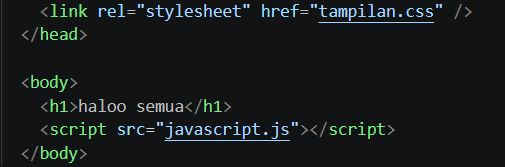
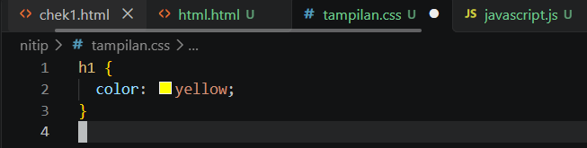
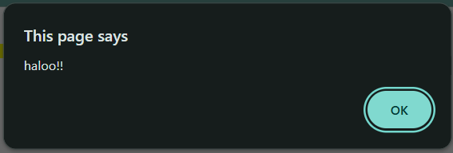

Materi Dasar Pemograman
Pengenalan beberapa dasar pemrograman untuk pemula.
01. HTML
HTML digunakan untuk membuat struktur halaman website, seperti judul, paragraf, gambar, dan tombol.

02. CSS
CSS digunakan untuk mengatur tampilan website, seperti warna, ukuran, jarak, dan posisi elemen.

03. JavaScript
bahasa pemrograman open-source yang berjalan di sisi server (server-side) dan dirancang khusus untuk membangun halaman website yang dinamis serta aplikasi web.
04. Output html + css
Text H1 berwarna kuning karena telah diberi styling menggunakan CSS.

05. Output JavaScript
Berikut adalah notifikasi dari JavaScript.
